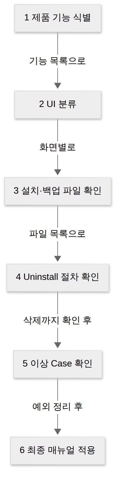
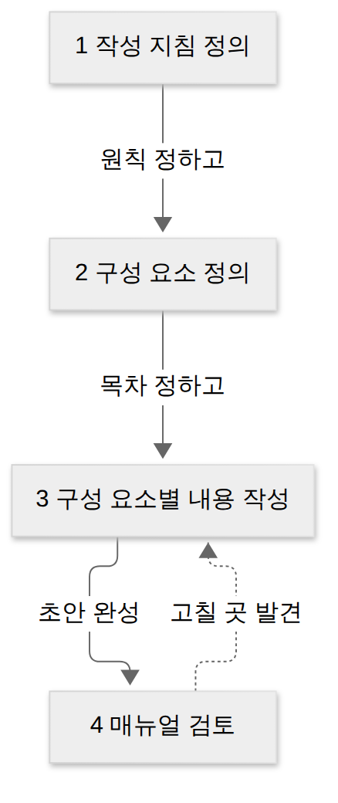
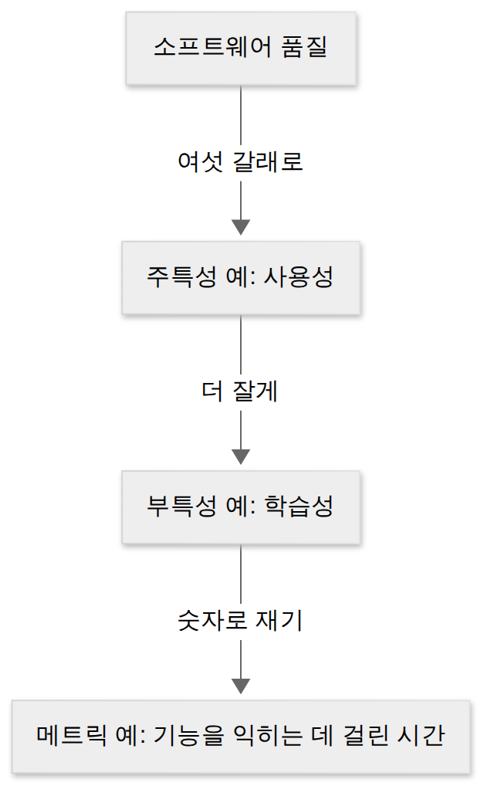
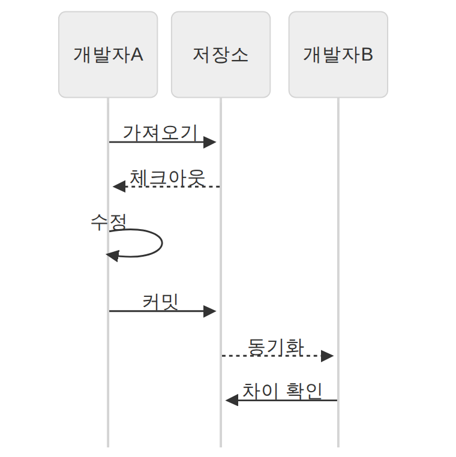
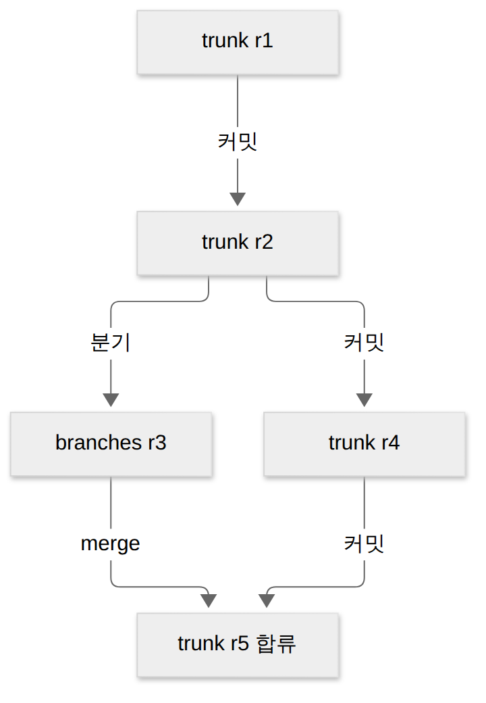
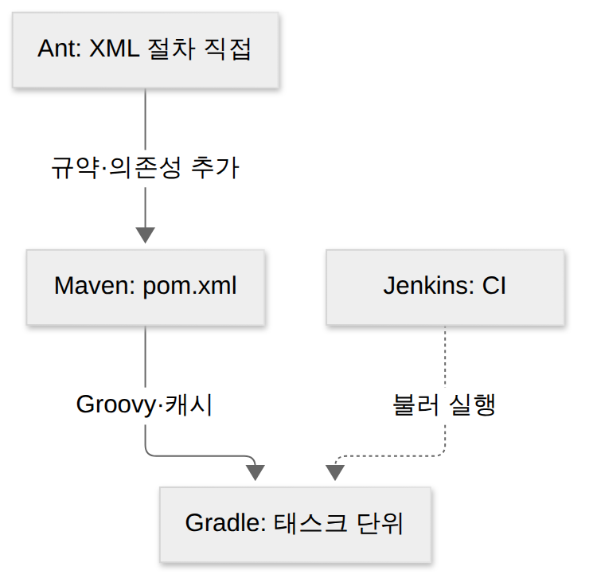

D024 · 매뉴얼 작성·국제 품질 표준·버전 관리와 빌드 자동화
A7 그제 D022에서 스터디캠을 설치 파일로 묶고, DRM으로 지키고, APM으로 지켜보는 법을 봤어요. 오늘은 A7 마지막 날이라 남은 세 가지를 마무리해요. 설치 파일과 함께 나가는 매뉴얼, 그 제품을 채점하는 국제 품질 표준, 그리고 무엇을 묶었는지 남기는 버전 관리와 매번 똑같이 묶어 주는 빌드 자동화예요.
- 설치 매뉴얼과 사용자 매뉴얼의 구성 항목과 작성 순서를 구별할 수 있다
- ISO/IEC 9126 6특성과 25010에서 늘어난 특성, 12119·14598·25000의 용도를 짝지을 수 있다
- 버전 등록 용어(가져오기·체크아웃·체크인·커밋·동기화·차이)와 SVN·Git 명령의 방향을 구별할 수 있다
- 빌드 자동화 도구(Ant·Maven·Gradle)와 CI 서버(Jenkins)의 역할을 구별할 수 있다
1. 큰 그림 — 설치 파일 하나로는 아직 제품이 아니다
D022의 스터디캠 팀은 v1.0 설치 파일을 만들었어요. 그런데 고객사 담당자는 설치 순서를 모르고, 발주처는 “품질은 무엇으로 증명하냐”고 묻고, 팀 안에서는 “이 설치 파일이 어느 코드로 만든 거냐”가 헷갈려요. 오늘의 네 개념은 이 세 질문과 “다음 빌드도 똑같이 나오냐”는 질문에 하나씩 답해요.
패키징이 끝난 제품은 이제 막 독립한 신입 같아요. 자기소개서(매뉴얼), 성적표(품질 표준), 이력서(버전 이력), 그리고 매일 똑같이 출근하는 습관(빌드 자동화)을 챙겨야 사회생활이 돼요. 아래 지도에서 오늘 용어가 매달릴 가지를 먼저 보세요.
→ 이 장면의 결과물: 오늘 채울 네 칸. 사용자에게 가장 먼저 닿는 건 설명서이니 매뉴얼부터 써요.
2. 장면 1 — 스터디캠 설명서 쓰기 (설치·사용자 매뉴얼)
왜 필요한가. 사용자는 개발자에게 전화해서 물어볼 수 없어요. 설치하다 막히거나 기능을 못 찾으면 그 순간 제품은 고장 난 것과 같아요. 그래서 패키징 결과물에는 설치 파일과 함께 설명서가 들어가요.
설치 매뉴얼은 사용자가 제품을 처음 설치하는 과정을 처음부터 끝까지 순서대로 설명한 문서예요. 스터디캠이라면 “설치 파일 실행 → 설치 위치 선택 → 완료 후 바탕화면 아이콘 확인”까지, 그리고 지우는 법까지가 이 문서의 몫이에요.
사용자 매뉴얼은 설치를 마친 사용자가 제품의 기능을 쓰는 방법을 설명한 문서예요. 강의 검색, 이어 보기, 오프라인 저장 같은 기능을 화면 단위로 안내해요. 같은 제품의 설명서지만 시간 축이 달라요. 설치 매뉴얼은 설치 전·설치 중, 사용자 매뉴얼은 설치 후예요.
공통 원칙. 두 문서 모두 개발자가 아니라 사용자를 기준으로 써요. 설치 매뉴얼에 “이 기능은 3월 야근 주간에 만들었다”는 정보는 필요 없어요. 사용자는 개발 비화가 아니라 ‘다음’ 버튼을 몇 번 눌러야 하는지가 궁금해요. 개발 기간·내부 설계 같은 개발자 정보는 넣지 않아요.
구성 — 같은 뼈대, 다른 속살
두 매뉴얼은 목차·개요 → 서문 → 기본 사항이라는 같은 뼈대로 시작해요. 목차·개요에서는 전체 흐름과 제품의 주요 특징을 먼저 보여 주고, 서문에서는 문서 자체에 대한 정보를, 기본 사항에서는 제품에 대한 기본 정보를 담아요.
서문의 문서 이력은 이 매뉴얼이 몇 번째 판인지, 주석은 주의사항과 참고사항을 적는 곳이에요. 설치 매뉴얼 서문에는 여기에 설치 도구 구성(exe·dll·ini 같은 설치 파일 묶음)과 설치 환경 체크 항목(CPU·메모리·OS 같은 사용자 환경, 설치 전에 종료할 다른 프로그램)이 더해져요. 사용자 매뉴얼 서문에는 제품 등록 정보 같은 기록 보관 항목이 들어가요.
기본 사항도 목적에 맞게 갈라져요. 설치 매뉴얼은 SW 개요, 설치 관련 파일, 설치 아이콘, 프로그램 삭제 방법을 적어요. 사용자 매뉴얼은 SW 개요, 사용 환경과 관리 방법, 모델·버전별 특징, 기능·인터페이스 특징을 적어요. 아래 그림에서 왼쪽과 오른쪽 책의 속을 비교해 보세요.
한 장 요약 — 두 매뉴얼을 같은 줄에 놓으면 이래요.
| 구분 | 설치 매뉴얼 | 사용자 매뉴얼 |
|---|---|---|
| 목적 | 처음 설치하는 과정을 순서대로 안내 | 설치 후 기능을 쓰는 방법 안내 |
| 서문 | 문서 이력, 주석, 설치 도구 구성, 설치 환경 체크 항목 | 문서 이력, 주석, 기록 보관(등록 정보) |
| 기본 사항 | SW 개요, 설치 관련 파일, 설치 아이콘, 프로그램 삭제 | SW 개요, 사용 환경·관리, 모델·버전별 특징, 기능·UI 특징 |
| 작성 순서 | 6단계 (아래 그림) | 4단계 (아래 그림) |
작성 순서 — 설치 6단계, 사용자 4단계
설치 매뉴얼은 제품에서 출발해요. 먼저 제품의 기능을 식별하고, 그 기능이 어떤 화면(UI)으로 나뉘는지 분류해요. 그다음 설치·백업 파일을 확인하고, 프로그램을 지우는 Uninstall 절차를 확인하고, 설치 중 생길 수 있는 이상 상황(이상 Case)을 확인한 뒤, 최종 매뉴얼에 반영해요.
Uninstall 절차까지 적는 이유는 이별도 매너 있게 하기 위해서예요. 지운 뒤에 레지스트리에 흔적이 남는 프로그램은 오래 미움받아요. 이상 Case는 “디스크 공간 부족”, “이전 버전이 설치돼 있음” 같은 상황에서 사용자가 무엇을 해야 하는지 알려 주는 단계예요.

사용자 매뉴얼은 문서 규칙에서 출발해요. 작성 지침(누구를 대상으로, 어떤 말투와 형식으로)을 정의하고, 매뉴얼에 들어갈 구성 요소(목차)를 정의하고, 구성 요소별로 내용을 쓰고, 마지막으로 검토해요. 검토에서 고칠 곳이 나오면 내용 작성으로 되돌아가요.

→ 이 장면의 결과물: 설치 매뉴얼과 사용자 매뉴얼 두 권. 이제 발주처가 묻는 “그래서 이 제품, 품질이 좋은가요?”에 답할 차례예요.
3. 장면 2 — 성적표의 채점 기준 (ISO/IEC 9126)
왜 필요한가. “좋은 소프트웨어”는 사람마다 다르게 말해요. 개발자는 코드가 깔끔하면, 사용자는 쓰기 편하면, 운영자는 안 죽으면 좋다고 해요. 서로 다른 말로 다투지 않으려면 공통 항목이 필요하고, 그 항목표가 9126이에요(1991년 제정, 2001년 개정).
정의. ISO/IEC 9126은 소프트웨어 제품의 품질 특성과 그 하위 특성, 이를 재는 메트릭을 정의한 국제 표준이에요. 품질 모델·외부 메트릭·내부 메트릭·사용 품질 메트릭의 네 부분으로 되어 있어요. 사용 품질은 실제 사용자 입장에서 본 효과성·생산성·안전성·만족도예요.
여섯 특성은 소개팅 체크리스트처럼 읽으면 쉬워요. 할 일은 제대로 하나, 약속은 지키나, 대화는 편한가, 돈을 아껴 쓰나, 고쳐 쓸 수 있나, 이사 가도 적응하나. 각 꼭짓점의 질문을 그림으로 먼저 보세요.
기능성은 요구된 기능을 정확하게 제공하는지예요. 스터디캠이 “이어 보기”를 약속했으면 정확히 멈춘 지점에서 재생돼야 해요. 9126에서는 보안성(허가 안 된 접근 막기)과 상호운용성(다른 시스템과 함께 동작)이 기능성의 부특성이라는 점을 기억해 두세요. 25010에서 이 둘이 이사 가요.
신뢰성은 정해진 조건에서 정해진 기간 동안 오류 없이 성능을 유지하는지, 사용성은 사용자가 쉽게 이해하고 배우고 조작하는지예요. 신입 강사가 매뉴얼 없이도 강의 업로드를 해낸다면 사용성(그중 학습성)이 좋은 거예요.
효율성은 시간과 자원을 얼마나 적게 쓰는지예요. 영상 로딩이 빠르고 메모리를 덜 먹는다면 효율성이 좋은 거예요. 유지보수성은 결함을 찾고 고치고 바꾸기 쉬운지, 이식성은 다른 환경(OS·하드웨어)으로 옮겨도 쉽게 동작하는지예요. 윈도우판 스터디캠을 맥으로 옮기기 쉬우면 이식성이 높아요.
각 주특성은 다시 부특성으로 쪼개지고, 부특성은 숫자로 재는 메트릭으로 내려가요. 아래 사슬은 사용성 한 줄기만 따라 내려간 예예요.

한 장 요약 — 주특성과 부특성이에요. 부특성 이름은 교재마다 번역이 조금 달라 괄호에 다른 이름을 적었어요. 시험에는 주로 주특성 6개와 “학습성은 사용성”, “보안성은 9126에서 기능성 아래”가 나와요.
| 주특성 | 묻는 것 | 부특성 |
|---|---|---|
| 기능성 | 요구 기능을 정확히 제공하나 | 적합성, 정확성, 상호운용성, 보안성, 준수성 |
| 신뢰성 | 오류 없이 성능을 유지하나 | 성숙성, 결함 허용성, 회복성(복구성) |
| 사용성 | 쉽게 이해·학습·조작하나 | 이해성, 학습성, 운용성, 친밀성(매력성) |
| 효율성 | 시간·자원을 적게 쓰나 | 시간 효율성, 자원 효율성 |
| 유지보수성 | 고치고 바꾸기 쉬운가 | 분석성, 변경성, 안정성, 시험성 |
| 이식성 | 다른 환경에서도 동작하나 | 적응성, 설치성, 공존성, 대체성 |
D011의 아키텍처 품질 속성과 무엇이 다를까요? 그쪽은 “설계할 때 무엇을 우선할까”라는 설계자 관점이고, 9126은 “완성된 제품을 무엇으로 채점할까”라는 평가 관점이에요. 그리고 유지보수성의 부특성 시험성은 내일부터 시작하는 A8 테스트의 근거가 돼요.
→ 이 장면의 결과물: 6과목 성적표. 그런데 이 성적표는 2011년에 개정판이 나왔어요.
4. 장면 3 — 새 성적표와 관련 표준 (25010·12119·14598·25000)
왜 바뀌었나. 9126이 나온 뒤 10년 사이 소프트웨어는 인터넷에 연결되고 여러 시스템과 엮였어요. 보안과 시스템 간 호환이 “기능 중 하나”로 묻어 있기엔 너무 중요해졌어요. 그래서 2011년 ISO/IEC 25010이 9126을 대체했어요.
정의. ISO/IEC 25010은 소프트웨어 제품 품질을 기능 적합성·성능 효율성·호환성·사용성·신뢰성·보안성·유지보수성·이식성 8개 주특성으로 정의한 품질 모델이에요. 기능성은 기능 적합성으로, 효율성은 성능 효율성으로 이름이 바뀌었어요.
가장 큰 변화는 두 칸이에요. 9126에서 보안성은 기능성 팀의 팀원이었는데, 25010에서 팀장으로 승진해 자기 팀(기밀성·무결성·부인방지·책임성·인증성)을 꾸렸어요. 해킹 뉴스가 늘어난 10년이 만든 인사 발령이에요. 상호운용성은 새로 생긴 호환성(상호공존성·상호운용성)으로 옮겨 갔어요.
9126 옆에는 함께 쓰던 표준이 둘 더 있었어요. ISO/IEC 12119는 패키지 소프트웨어(시중에 파는 완제품)의 품질 요구사항과 테스트에 관한 표준이에요. 스터디캠을 박스 제품처럼 판다면 이 기준으로 제품 설명·문서·프로그램을 시험해요.
ISO/IEC 14598은 소프트웨어 제품을 평가하는 절차를 정한 표준이에요. 9126이 “무엇을 채점하나(과목)”라면 14598은 “어떤 순서로 채점하나(시험 진행 방식)”예요. 둘은 짝으로 쓰여요.
ISO/IEC 25000(SQuaRE)은 흩어져 있던 9126·14598·12119를 하나로 통합한 품질 표준 체계예요. 표준 번호가 다섯 자리라 외우기 싫게 생겼지만, 25000은 흩어진 형제들을 한 집에 모은 큰집이라고 기억하면 돼요. 그 안을 품질 관리·모델·측정·요구·평가 다섯 분야로 나누고, 25010은 품질 모델 분야에 들어가요.
한 장 요약 — 표준 번호와 용도예요. 시험은 번호를 주고 용도를 고르거나, 용도를 주고 번호를 고르게 해요.
| 표준 | 이름·성격 | 용도 |
|---|---|---|
| ISO/IEC 9126 | 품질 특성·메트릭 | 6특성으로 제품 품질 평가 |
| ISO/IEC 25010 | 9126 대체 품질 모델 | 8특성(보안성·호환성 추가) |
| ISO/IEC 12119 | 패키지 SW 품질 | 완제품의 품질 요구사항·테스트 |
| ISO/IEC 14598 | 제품 평가 절차 | 평가를 어떤 순서로 하나 |
| ISO/IEC 25000 | SQuaRE | 9126·14598·12119 통합 체계 |
→ 이 장면의 결과물: 품질을 증명할 기준표. 다음 질문은 팀 안에서 나와요. “이 설치 파일은 어느 코드로 만든 거죠?”
5. 장면 4 — 무엇을 묶었는지 남기기 (버전 등록 용어)
D021에서 형상관리로 기준선을 찍고, 버전 관리 방식 세 가지를 봤어요. 오늘은 그 버전 관리 도구 안에서 매일 쓰는 동작의 이름을 배워요. 현업에선 손이 먼저 아는 동작들이지만, 시험은 이 동작에 정해진 한국어 용어를 붙여 물어요.
저장소(Repository)는 최신 버전 파일과 변경 이력을 모두 담아 두는 곳이에요. 가져오기(Import)는 버전 관리가 되지 않던 아무것도 없는 저장소에 파일을 처음 복사해 넣는 일이에요. 스터디캠 프로젝트를 처음 버전 관리에 올리는 순간이 가져오기예요.
체크아웃(Check-Out)은 프로그램을 수정하려고 저장소에서 파일을 받아 오는 일이고, 이때 소스 코드와 함께 버전 관리 파일도 따라와요. 체크인(Check-In)은 수정을 마친 뒤 저장소의 파일을 새 버전으로 갱신하는 일이에요.
커밋(Commit)은 체크인할 때 이전 갱신 사항이 있으면 충돌(Conflict)을 알리고, diff로 차이를 확인해 해결한 뒤 새 버전으로 확정하는 일이에요. 동기화(Update)는 저장소의 최신 버전으로 내 작업 공간을 맞추는 일, 차이(Diff)는 새 버전과 이전 버전의 차이를 비교하는 일이에요.
등록 과정은 두 개발자가 같은 저장소를 쓰는 장면으로 보면 순서가 잡혀요. A가 가져오기로 저장소를 채우고, 체크아웃으로 받아 고친 뒤 커밋해요. B는 동기화로 A의 변경을 받고, 차이로 무엇이 바뀌었는지 확인해요.

출제자는 “저장소의 파일을 새로운 버전으로 갱신하는 것”을 쓰고 선지에 체크아웃을 맨 앞에 둬요. 호텔과 반대라는 걸 잊었길 바라면서요. 호텔은 체크인이 들어가는 것이지만, 버전 관리에선 체크아웃이 ‘받아 나오기’, 체크인이 ‘반납하며 갱신’이에요.
한 장 요약 — 일곱 용어와 방향이에요.
| 용어 | 하는 일 | 방향 |
|---|---|---|
| 저장소 | 최신 버전·변경 이력 보관 | — |
| 가져오기 (Import) | 빈 저장소에 파일을 처음 복사 | 작업 공간 → 저장소 (최초 1회) |
| 체크아웃 | 수정하려고 파일을 받아 옴 | 저장소 → 작업 공간 |
| 체크인 | 수정한 파일로 저장소를 새 버전 갱신 | 작업 공간 → 저장소 |
| 커밋 | 충돌 확인·해결 후 갱신 확정 | 작업 공간 → 저장소 |
| 동기화 (Update) | 저장소 최신 버전으로 내 쪽 맞춤 | 저장소 → 작업 공간 |
| 차이 (Diff) | 버전 간 차이 비교 | — |
→ 이 장면의 결과물: 용어 일곱 개. 실제 도구 SVN과 Git에서는 이 동작을 어떤 명령으로 부를까요?
6. 장면 5 — SVN과 Git 명령어 지도
SVN(Subversion)은 CVS를 개선하려고 2000년에 시작된 클라이언트/서버 방식 도구로, 지금은 아파치 재단이 관리해요. 모든 개발자가 하나의 중앙 저장소에 커밋하고, 커밋할 때마다 저장소 전체의 리비전 번호가 1씩 올라가요. 서버가 꺼지면 커밋을 못 한다는 게 이 방식의 대가예요.
SVN 저장소는 관례적으로 trunk(메인 줄기)와 branches(가지)로 나뉘어요. 평소 개발은 trunk에서 하고, 따로 실험할 기능은 branches에서 작업한 뒤 merge로 trunk에 합쳐요. 아래 그림의 r 번호가 커밋마다 하나씩 올라가는 리비전이에요.

SVN 명령 중 시험에 짝으로 나오는 건 import와 export예요. import는 아무것도 없는 저장소에 파일을 처음 올리는 명령(최초 1회)이고, export는 버전 관리 정보를 빼고 순수한 파일만 받아 오는 명령이에요. checkout은 버전 관리 정보까지 함께 받아요.
Git은 2005년 리누스 토발즈가 리눅스 커널 개발을 위해 만든 분산 방식 도구예요. 개발자마다 로컬 저장소에 전체 이력을 갖고 있어서 네트워크 없이도 커밋할 수 있고, 공유할 때만 원격 저장소로 보내요. 파일 차이가 아니라 시점별 스냅샷으로 저장해요.
Git에는 SVN에 없는 칸이 하나 있어요. 스테이징 영역이에요. 스테이징 영역은 택배 박스예요. 물건(변경)을 다 넣고 테이프(commit)를 붙이기 전까지는 빼고 넣고를 마음대로 할 수 있어요. add로 담고, commit으로 로컬 저장소에 확정하고, push로 원격 저장소에 올려요.
반대 방향도 짝으로 외워 두세요. fetch는 원격 저장소의 변경을 로컬 저장소로 가져오기만 하고(작업 디렉터리에 합치진 않음), pull은 fetch에 merge까지 한 번에 해요. clone은 원격 저장소 전체를 처음 통째로 복제해 오는 명령이에요.
한 장 요약 — 같은 일을 두 도구에서 뭐라고 부르는지예요.
| 하는 일 | SVN | Git |
|---|---|---|
| 저장소 처음 만들기·채우기 | import (최초 1회) | init, 그 뒤 add·commit |
| 저장소 받아 오기 | checkout | clone |
| 변경 확정 | commit (바로 중앙 저장소) | add → commit (로컬), push (원격) |
| 최신 변경 받기 | update | fetch, pull(= fetch + merge) |
| 가지 만들고 합치기 | branches 복사, merge | branch, checkout, merge |
| 버전 정보 없이 내보내기 | export | — |
→ 이 장면의 결과물: “v1.0은 trunk r4, Git 태그 v1.0”처럼 설치 파일의 출처가 남았어요. 마지막 질문은 “다음 빌드도 똑같이 나오나요?”예요.
7. 장면 6 — 매번 같은 조립 라인 (빌드 자동화 도구)
왜 필요한가. 빌드는 소스 코드를 컴파일하고 여러 모듈을 묶어 실행 가능한 결과물로 만드는 과정이에요. 실제로는 의존 라이브러리 받기, 테스트, 패키징까지 이어져요. 이걸 사람이 손으로 하면 금요일 오후 빌드와 월요일 아침 빌드가 미묘하게 달라요. 자동화 도구는 기분을 타지 않아요.
빌드 자동화 도구는 빌드·테스트·배포 같은 반복 작업을 스크립트로 정의해 자동으로 수행하게 하는 도구예요. 코드를 자주 합치고 그때마다 빌드·테스트하는 지속적 통합(CI) 환경에서 특히 쓸모가 커요.
Ant는 아파치의 초기 빌드 도구로, XML 파일(build.xml)에 빌드 절차를 하나하나 직접 적어요. 자유롭지만 정해진 규칙이 없어 프로젝트마다 스크립트가 제각각이에요. Maven은 pom.xml에 프로젝트 정보와 의존 라이브러리만 선언하면 정해진 디렉터리 규약과 생명주기에 따라 빌드하고, 필요한 라이브러리를 자동으로 내려받아요.
Gradle은 Groovy 기반 DSL로 빌드 스크립트를 쓰는 도구예요. 처리 명령을 태스크(Task) 단위로 실행하고, 이전 결과를 재사용하는 빌드 캐시로 속도를 높여요. 안드로이드 앱 개발의 기본 빌드 도구라 시험 지문에 “안드로이드”가 보이면 Gradle이에요(요즘은 Kotlin DSL도 써요).
Jenkins는 층이 달라요. Java 기반 오픈소스이고 서블릿 컨테이너에서 돌아가는 서버 기반 CI 도구예요. Git·SVN 같은 버전 관리 도구와 연동해 변경이 올라오면 빌드를 시작하고, 웹 GUI로 관리하며, 여러 서버에 나눠 빌드하는 분산 빌드도 지원해요. Gradle이 요리 레시피라면 Jenkins는 주문이 들어올 때마다 그 레시피대로 요리를 시키는 주방장이에요.

CI 한 바퀴로 다시 보면 역할이 갈려요. 개발자가 push하면 Jenkins가 감지하고, Gradle을 불러 컴파일·테스트를 하고, D022에서 배운 패키징까지 이어져요. 실패하면 바로 개발자에게 알림이 가서, 깨진 코드가 오래 묻혀 있지 않아요.
한 장 요약 — 네 도구의 기반과 역할이에요.
| 도구 | 기반·설정 | 특징·역할 |
|---|---|---|
| Ant | Java·XML(build.xml) | 빌드 절차를 직접 기술, 규약 없음 — 빌드 도구 |
| Maven | Java·XML(pom.xml) | 의존성 자동 관리, 정해진 규약·생명주기 — 빌드 도구 |
| Gradle | Groovy DSL | 태스크 단위 실행, 빌드 캐시, 안드로이드 — 빌드 도구 |
| Jenkins | Java·서블릿 컨테이너 | Git·SVN 연동, 웹 GUI, 분산 빌드 — CI 서버 |
→ 이 장면의 결과물: 사람 손을 타지 않는 조립 라인. 이제 여섯 장면을 한 번에 꿰어 봐요.
8. 한 장 정리와 암기 단서
오늘 장면을 결과물 중심으로 다시 놓으면 아래 표예요. 앞 장면의 결과물이 다음 장면의 질문을 불러온 흐름을 확인하세요.
↔ 표가 넓어요. 옆으로 밀어서 보세요
| 장면 | 하는 일 | 시험 개념 | 결과물 |
|---|---|---|---|
| 1 | 설명서 두 권 쓰기 | 설치·사용자 매뉴얼, 작성 순서 6·4 | 매뉴얼 |
| 2 | 품질 채점 기준 잡기 | ISO/IEC 9126 6특성 | 품질 기준표 |
| 3 | 새 기준과 관련 표준 | 25010, 12119, 14598, 25000 | 8특성·SQuaRE |
| 4 | 코드 이력 남기기 | 체크아웃·체크인·커밋·동기화 | 버전 이력 |
| 5 | 도구 명령 쓰기 | SVN trunk·리비전, Git add·push·fetch | 출처가 남은 v1.0 |
| 6 | 빌드 자동으로 돌리기 | Ant·Maven·Gradle, Jenkins CI | 매번 같은 빌드 |
설명을 다 읽은 뒤 정리용으로 쓰세요. 두문자어는 이름을 붙잡는 손잡이일 뿐이에요. 손잡이만 들고 가면 문은 안 열려요.
확인 문제 (채점 완료 · 5/5)
- ISO/IEC 9126에서 정의한 소프트웨어 제품의 주 품질 특성 6가지에 해당하지 않는 것은?
정답·해설
② 호환성. 9126 주특성은 기능성·신뢰성·사용성·효율성·유지보수성·이식성이고, 호환성은 25010에서 추가됐어요. - 저장소에서 받아 온(체크아웃한) 파일의 수정을 마친 뒤, 저장소의 파일을 새로운 버전으로 갱신하는 버전 등록 작업은?
정답·해설
③ 체크인. 수정한 파일을 저장소에 새 버전으로 올려요. Import는 처음 넣기, Update는 내 작업 공간을 최신으로, Diff는 차이 비교예요. - Groovy 기반 DSL로 빌드 스크립트를 작성하고, 처리 명령을 태스크(Task) 단위로 실행하며 빌드 캐시로 속도를 높이는, 안드로이드 앱 개발 환경에서 쓰이는 빌드 자동화 도구는?
정답·해설
④ Gradle. Groovy DSL·태스크·빌드 캐시·안드로이드가 단서예요. Jenkins는 서버 기반 CI 도구예요. - (누적) 사내 메신저 도입에서 보안팀은 외부 파일 전송 차단을, 영업팀은 거래처와의 파일 공유를 요구한다. 두 팀 대표와 PM이 진행자의 진행 아래 한자리에 모여 집중 토의하고 합의안을 만드는 요구사항 도출 기법은?
정답·해설
① 워크숍. 상충 요구를 한자리에서 토의·합의해요. - (누적) 결제 객체가 카드·포인트·간편결제 알고리즘을 각각 별도 클래스로 두고, 사용하는 쪽(클라이언트)이 실행 시점에 원하는 결제 알고리즘 객체를 골라 넣어 주는 디자인 패턴은? (객체가 스스로 알고리즘을 바꾸지 않는다)
정답·해설
② 전략. 클라이언트가 실행 시점에 알고리즘 객체를 골라 넣어요. S02 효과가 있었네요.
고른 뒤 답안 복사 → 디스코드 공부 채널에 붙여넣기 하면 돼요.
답장: 정처기 D024: 1)번호 2)번호 3)번호 4)번호 5)번호
내일 D025부터 A8 「애플리케이션 테스트 관리」예요. 오늘 본 시험성이 왜 품질 특성에 들어 있는지 거기서 이어져요. D022·D023 답장도 아직 기다리고 있어요. 편할 때 한꺼번에 보내 주세요.